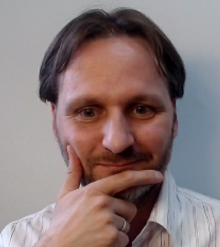

←
 Gerard Braad
Gerard Braad

Gerard is an expert in software development practices and methodologies who is experienced with Kubernetes, Linux, Containers, Virtualization and AI. He has developed and overseen projects and is considered by his peers as a real full-stack engineer. With a focus on delivering quality and secure solutions, he has been able to provide small to enterprise level customers solutions that met their needs.
He is a multi-disciplinary with excellent technical skills in a wide-range of principles; from software delivery, Continuous Integration, Continuous Delivery, and Deployment, to testing and performance tuning. An active consultant for Linux and Open Source and as part of this, he gives talks on software development and Open Source. He has years of experience developing software for different form-factors, programming and scripting languages. Specialized in dealing with mixed environments; for the Web, mobile, desktop and servers.
Red Hat, January 2017 - July 2026
Leading platform engineering teams developing local container development tools for OpenShift, Kubernetes, and Podman across Linux, macOS, and Windows. Architected innovations in developer experience that have been adopted across the industry.
Key Achievements:
Management Activities:
UnitedStack (Beijing), November 2015 - December 2016
Gerard has been integral to UnitedStack’s transformation to provide services, which have led to UnitedStack becoming a Gold Member supporting the OpenStack Foundation and recognized training partner. Gerard has been able to deliver solutions to the customer based on different use-cases, utilizing Infrastructure-as-a-Service and Platform-as-a-Service such as OpenStack-based and Kubernetes.
By working closely with upstream projects, he has introduced improvements that have led to a better product deliverance and overall improved quality.
InfThink (Beijing), September 2015 - December 2015
Gerard delivered an Internet-of-Things platform using FirefoxOS (Android) and techniques used in Platform-as-a-Service. Using an intuitive real-time HTML5 web interface, the device can be configured and provisioned with additional functionality.
ThoughtWorks (Beijing), November 2013 - September 2015
Gerard led the new development, by choosing the technology stack, planning work increments. Utilizing HTML5 technology, a fully dynamic frontend using JavaScript and microservices in different languages, his team created a project that is now in use by the client for managing the mobility needs. This application sees a usage of hundreds of clients and thousands of users. Gerard has contributed a Federated SSO (Single Sign On) solution, allowing users connecting using their work email and sharing files with Box.net. Because of his work, all applications passed internal and external security scans, such as SensePost.
非常好看(FeichangHaokan), October 2011 – April 2013
Gerard worked as the technical lead at a Joint-Venture between FCHK and Nomovok. He was responsible for the development of an online contest platform focusing on people and their passions and interests. The software design and infrastructure allowed him to deliver a scalable web platform which could handle thousands of concurrent requests.
During that time the also represented Nomovok in Asia and developed several successful demonstration applications using the SteelRat Linux platform for phone and desktop use.
东软集团(Neusoft) (Beijing), July 2010 – October 2011
As the Technical Support Lead for the newly formed MeeGo team, Gerard assisted testers with automating test actions, retrieving tracing and debugging information. To streamline the work of engineers he co-developed a QA tool to track bugs created locally and externally. This tool consisted of a real-time component augmenting Bugzilla’s interface with our needed QA components without alteration of the externally deployed Bugzilla codebase.
Presented with an employee award for outstanding performance. Gerard has been integral in implementing Agile practices and dealing with intercultural issues.
Sogyo Information Engineering (Netherlands), November 2005 – May 2010
Gerard worked as an experienced all-round software engineer on several projects and provided training about development methodologies and project management.
For the IT infrastructure, Gerard has implemented a fault tolerant setup All existing server have been migrated to a completely virtualized environment with redundant storage setup. This setup allowed Sogyo to utilize faster automated testing, a more flexible choice in technology and new ideas on software deliverance. This all led to an overall quality improvement.
Command & Control Support Centre, Ministerie
van Defensie (RNLA) (Ede) – Network Centric Warfare.
Gerard developed a fault tolerant and secure data distribution framework
used by all applications to support armed forces during missions and
operations. For the Cyrus project, he implemented an interactive
geodesic visualization that aids the military in planning and staging of
troops and equipment. For the Very Optimized Soldier System, he ported
the codebase to run as an embedded version of Windows and Linux using
Mono and SQLite. He assisted several teams in the migration of TFS to
Git which has helped the team to deliver faster test deliverables and
overall improved productivity.
VACAM, Voortman Automatisering
(Rijssen)
Gerard led the team of a new development stream which involved bridging
.NET and SoftPLC technology. Using domain driven design and a
forward-looking vision, the team is now able to deliver better products
using a very maintainable code-base.
Showroom Order Entry, G-Star RAW (Amsterdam)
Gerard delivered a fault-tolerant order entry system for use during
sales sessions while coping with peak season. He introduced code testing
and continuous integration which became the basis for all future
development.
Digitaal Werven (de Bilt)
Gerard developed both front-end and back-end of an online recruiting
assessment and report system which is used by various Dutch and
international companies.
UEFA Euro 2008, Summit (Utrecht)
Gerard developed the registration module and pluggable authentication
code for the UEFA registration management system.
Resilience (de Bilt) Gerard developed interactive front-end code for a profile registration system.
OIT Inbox, Belastingdienst (Apeldoorn)
As a J2EE software engineer, Gerard led the re-engineering project of an
application that controls the flow of information and acts as a portal
for Tax for all companies in the Netherlands.
Tharsis (Netherlands), November 2004 – July 2005
Gerard successfully developed a Business Process Management using Microsoft .NET and Microsoft Office technologies based on a prototype. It allowed consultants to visualize the project they worked on and see the immediate impact of changes. This visualization made providing feedback to the client easier and increased positive result.
SpotlightMedia (Netherlands), August 2003 – June 2004
Gerard co-founded and led the software development team at Spotlight Media. I designed and developed a content management system using Python which was used by all customers. This system made it possible for customers to alter their content without the involvement of a content editor or developer for publication on their website, and export for use as marketing material.
Max.NL Internet Publishing (Netherlands), January 2001 – July 2003
Gerard developed an online tax reporting system for several municipalities of the Netherlands; Apeldoorn, Lelystad, Zoetermeer and others. His contributions made it possible to re-use different data formats and database implementations as the StufTax data source for the reporting. For SILK he created a successful web front-end integration with a desktop environment to risk assessment.
Getronics NV, Networking and Services (Netherlands), August 1999 – January 2000
Because Gerard was able to provide a very broad scope of knowledge, from Windows NT, Novell Netware, to Unix and more, he often accompanied fields engineers on consultancy.
University of Applied Sciences Utrecht (Netherlands), September 2001 – 31 August 2005
Technische College Ede (Netherlands), September 1999 – 9 July 2001
Education focussed on electronics and computer interfacing.
Apeldoorns College (Netherlands), September 1997 – July 1999